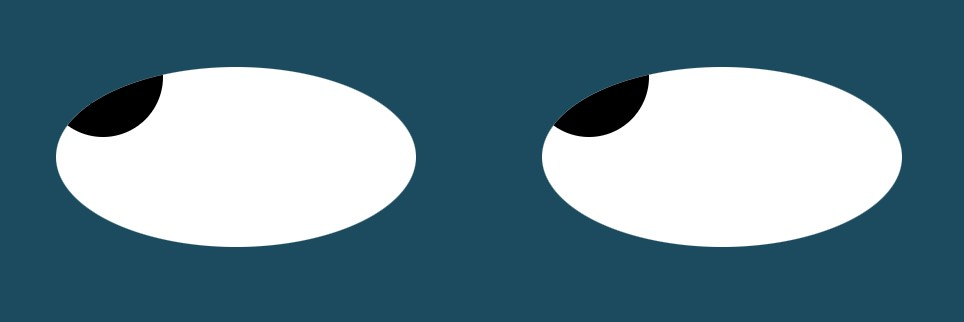
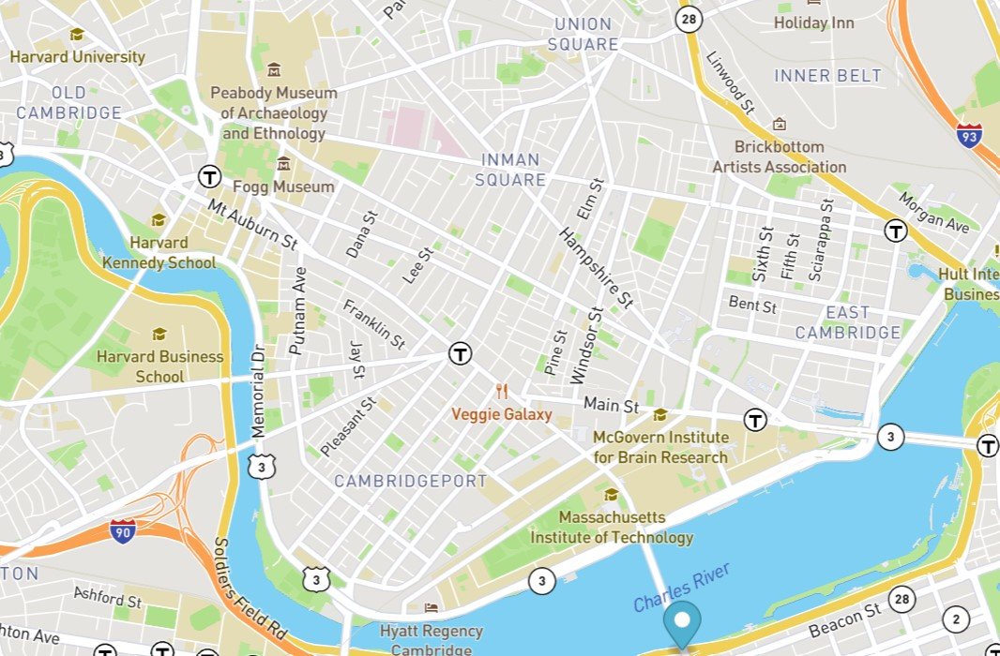

Current Projects
Below are some Exercises I have been working on. Feel free to take a look!
Pac Man Exercise
This exercise allows a user to add One or more PacMen to the screen and then having the PacMen move around randomly at different speeds.
This exercise focused on manipulating the DOM.

Eye Exercise
This exercise creates eyes that will follow the mouse cursor.
The onmousemove Event is used to make this work.

Real Time Bus Tracker Exercise
This exercise focuses on tracking busses that connect Harvard and MIT.
API's are used to pull data from Mapbox.com and the Massachusetts Bay Transportation Authority to make this work
